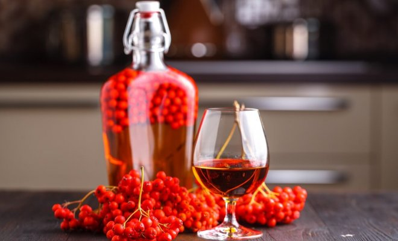
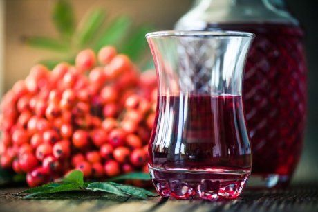
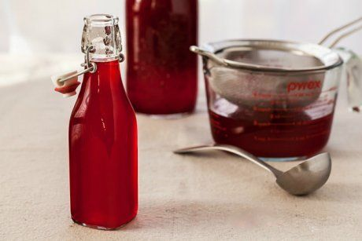
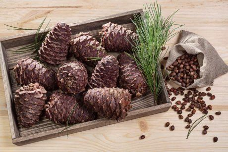
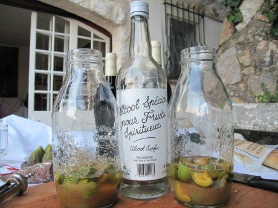
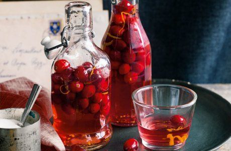
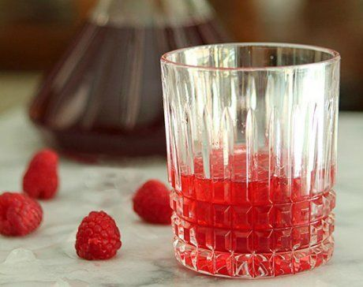
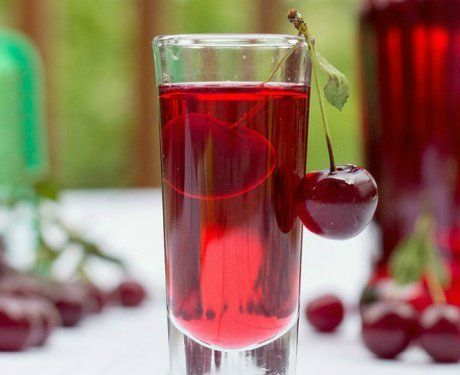

shutterstock.com / Tasha Cherkasova
Настойка – крепкий алкогольный напиток на основе различных ягод, фруктов, орехов, кореньев и трав. Приготовить настойку в домашних условиях совсем не сложно – понадобится несколько простых ингредиентов и немного терпения.
Домашняя настойка на водке – это не только натуральный и вкусный напиток, он еще весьма полезен для здоровья, если знать меру. В лечебных и профилактических целях принимать настойки на водке следует по 1 ст.л. 2-3 раза в день. Это улучшит кровообращение, нормализует кровяное давление, снимет стресс. Сладкие домашние настойки из ягод и фруктов можно подавать гостям после обильного застолья.
Настойка из рябины на водке

У настойки приятный медный цвет, насыщенный вкус и невероятный ягодный аромат.
Вам понадобятся (из расчета на 10 л настойки): 6 кг ягод рябины, 0,5 кг сахара, водка.
Приготовление. Рябину промойте, удалите хвостики, немного обсушите и засыпьте в банки (или бутыль) на 2/3 объема, пересыпая сахаром. Засыпанные ягоды залейте водкой так, чтобы полностью их покрыть. Оставьте при комнатной температуре настаиваться, периодически подливая водки, так как ягоды впитывают жидкость. Настаивайте рябину 4 недели, затем слейте образовавшуюся жидкость в чистую герметичную емкость и залейте ягоды новой порцией водки. Настаивайте еще 6 недель. Затем слейте настой и смешайте его с первым. Дайте напитку "отдохнуть" хотя бы неделю. Чем дольше настойка будет стоять, тем вкуснее получится.
Настойка из калины на водке

Такая настойка не только весьма вкусная, но и полезная, особенно при простуде.
Вам понадобятся: 0,5 л водки, 0,5 кг ягод калины, 1 ст.л. меда.
Приготовление. Ягоды промойте и хорошо обсушите. Затем засыпьте в банку, добавьте мед и залейте водкой. Банку плотно закройте и поставьте в темное сухое место на две недели. Полученную жидкость процедите и разлейте по бутылкам. Хранить настойку из калины следует в холодильнике.
Кедровая настойка на водке

Настойка на кедровых орешках – это лечебное средство при многих недомоганиях. Однако увлекаться ей не стоит!
Вам понадобятся: 1 стакан кедровых орешков (неочищенных), 150 г сахара и 0,5 л водки.
Приготовление. Орехи вместе с сахаром залейте водкой и поставьте настаиваться в темное теплое место на 2 недели. Ежедневно встряхивайте емкость с настойкой, чтобы сахар полностью растворился. Через 2 недели процедите настойку в чистую герметичную емкость. Орехи не выбрасывайте, а снова залейте водкой (не добавляя сахар) и настаивайте еще 2 недели. Потом слейте и смешайте обе жидкости. Настойка готова!
Настойка грецкого ореха на водке

Такую настойку следует готовить из еще не созревших орехов с мягкой зеленой кожурой. И собирать такие плоды нужно прямо перед переработкой, чтобы они не потеряли своих полезных качеств.
Вам понадобятся: 30-40 зеленых плодов грецкого ореха, 500-800 г сахара и 1 л водки.
Приготовление. Орехи промойте, измельчите и сложите в банку. Засыпьте сахаром и залейте водкой. Банку поставьте на 2 недели в темное место настаиваться. Затем процедите жидкость и разлейте по бутылкам.
Настойка из клюквы на водке

Настойка из ягод клюквы ослабляет головные боли и помогает при хронической усталости. К тому же она весьма вкусная и ароматная. Ее можно подавать гостям после обильной трапезы.
Вам понадобятся (из расчета на 0,5 л напитка): 250 г ягод клюквы, 200 г сахара, 0,5 л водки, 50 мл воды.
Приготовление. Ягоды переберите, промойте и обсушите. Сложите их в банку, засыпьте сахаром и немного подавите, чтобы получилась кашица. Залейте все водкой, добавьте воду, перемешайте и, закрыв банку крышкой, поставьте в темное теплое место на 15 дней. Затем 2-3 раза процедите настойку через марлю, сложенную в несколько слоев, разлейте по бутылкам. Настойка готова спустя пару недель. Если она получилась слишком кислой, можно добавить сахарный сироп.
Настойка из ягод на водке

Для приготовления этой настойки можно взять любые ягоды (малину, клубнику, смородину, вишню, бруснику или смесь ягод).
Вам понадобятся: 0,5-1 кг ягод, 1 стакан сахара и 1 л водки.
Приготовление. Ягоды промойте и обсушите. В стерилизованную двухлитровую банку насыпьте сахар, влейте водку и уложите ягоды, до тех пор, пока водка не польется через край банки. Закатайте (!) крышкой и настаивайте минимум 48 дней. Затем процедите в чистую емкость, отожмите ягоды, по желанию добавьте в настойку еще сахара.
Вишневая настойка на водке

Вишневая настойка – это, пожалуй, самый распространенный, классический вариант домашней настойки.
Вам понадобятся: 2-3 кг вишен, 250-500 г сахара, 1 л водки.
Приготовление. Вишню промойте и хорошо обсушите. Засыпьте ягоды в трехлитровую банку на 2/3 объема, залейте водкой, чтобы полностью покрыть ягоды. Закройте крышкой и поставьте на 2 недели в темное прохладное место. Затем перелейте настоянную жидкость в чистую трехлитровую банку. К настоянной вишне добавьте свежие ягоды, засыпьте сахаром, перемешайте и снова поставьте в темное прохладное место. Через 4 дня отожмите ягоды через марлю, процедите образовавшийся сок и смешайте все с перелитой ранее настойкой.
Настойка из яблок на водке
Такая настойка получается довольно крепкой и очень ароматной.
Вам понадобятся: 1,5 кг яблок, 300 г сахара, 1 л водки, 0,5 л воды.
Приготовление. Яблоки хорошо вымойте под холодной водой и обсушите. Удалите темные пятна, гниль и вырежьте сердцевину с косточками. Нарежьте яблоки на мелкие кубики и сложите в банку. Залейте водкой, чтобы полностью покрыть фрукты. Закройте банку крышкой и поместите ее в темное место на 1-2 недели. Периодически доливайте водку в банку, так как яблоки ее впитывают, и слегка встряхивайте. Затем процедите настойку через марлю в чистую емкость. Из воды и сахара приготовьте сироп, перемешайте его с настойкой, дайте настояться несколько часов, затем повторно процедите через марлю. Напиток готов! Храните его в темном месте, хорошо закупорив крышкой.
Изготовление домашних настоек открывает широкий простор для фантазии, ведь можно экспериментировать с разными вкусами. К тому же это прекрасный способ переработать урожай ягод и плодов. Попробуйте и убедитесь в этом сами.